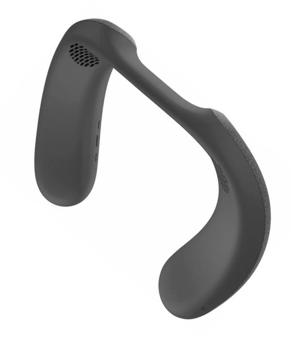
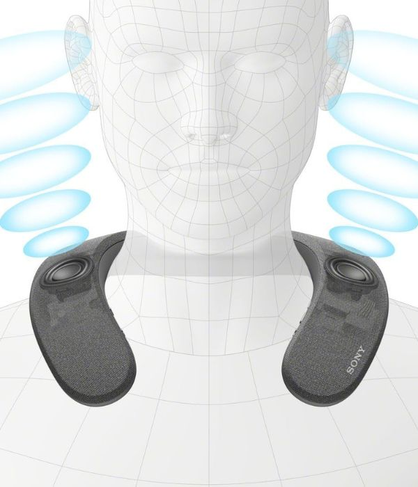
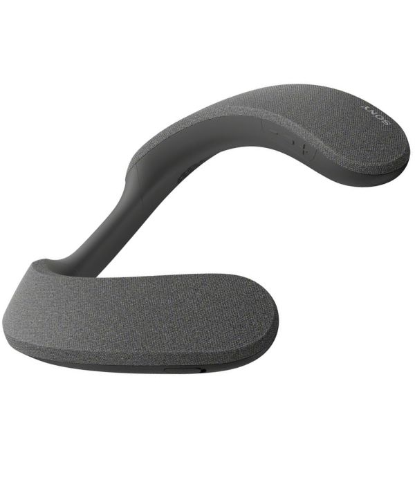

귀를 막지 않는 자유, 고막을 뒤흔드는 완벽한 시네마틱 돌비 애트모스 | 소니 SRS-NS7
이어폰의 이물감이나 헤드폰의 압박감, 그리고 거실 거대 스피커의 층간소음 걱정에서 완전히 해방되는 새로운 청각적 패러다임이 시작됩니다. 소니 SRS-NS7은 어깨 위에 가볍게 얹는 웨어러블 넥밴드 구조로, 오직 유저만을 향해 소리를 집중적으로 방사합니다. 소니가 독자 개발한 무선 트랜스미터와 **X-Balanced 스피커 유닛**이 만나 영상과 소리의 어긋남이 없는 **제로 레이턴시** 환경을 구현하며, 가슴을 울리는 정밀한 저음을 온몸으로 체감할 수 있습니다.



OTT 플랫폼의 폭발적인 성장과 4K 초고화질 콘텐츠의 대중화는 집 안의 거실을 영화관 수준으로 업그레이드하려는 니즈를 폭발시켰습니다. 그러나 공동 주택이라는 거주 환경 특성상 대형 사운드바나 5.1채널 스피커의 강력한 저음은 이웃 간의 갈등을 유발하는 부작용을 낳았습니다. 글로벌 오디오 엔지니어링의 거두 소니(SONY)가 내놓은 무선 넥밴드 스피커 SRS-NS7은 이어폰처럼 귀를 압박해 답답함을 유발하지 않으면서도, 대형 극장의 입체 음향 시스템을 개인의 어깨 위 공간으로 밀축시킨 하이테크 오디오 마스터피스입니다.
소니 SRS-NS7이 선사하는 공간감의 핵심은 인공지능 알고리즘과 하드웨어 인프라의 정교한 상호작용에 있습니다. 기본 동봉된 무선 트랜스미터(WLA-NS7)를 브라비아 XR TV 또는 일반 스마트 TV와 광케이블로 동기화하면 싱크 어긋남이 없는 완벽한 사운드 트래킹이 개시됩니다. 특히 스마트폰 전용 앱을 통해 사용자의 귀 모양을 촬영하면 귀의 굴곡을 분석하여 음향적 반사각을 보정하는 '360 Spatial Sound Personalizer' 기술이 가동됩니다. 이를 통해 전방과 측면은 물론 머리 위쪽 공간까지 정밀하게 쪼개진 소리의 가상 채널이 형성되어, 넷플릭스나 디즈니플러스의 Dolby Atmos 콘텐츠 감상 시 영화 속 헬리콥터가 머리 위를 지나거나 빗소리가 온몸을 감싸는 몰입감을 생생하게 만끽할 수 있습니다.
음질을 결정짓는 드라이버 아키텍처 역시 소니의 독자적인 기술 특허로 무장했습니다. 원형이 아닌 비대칭 사각형 모양으로 설계된 'X-Balanced 스피커 유닛'은 제한된 공간 안에서 진동판의 면적을 최대치로 확보하여 음압을 비약적으로 상승시켰으며, 고음역대의 디테일을 뭉개짐 없이 깨끗하게 재생합니다. 기기 하단부에 대칭 구조로 배치된 패시브 라디에이터(Passive Radiator)는 저음역대의 타격감을 극대화하여 귀로만 듣는 소리가 아닌, 어깨와 쇄골 라인의 미세한 진동을 통해 베이스를 온몸으로 느끼는 입체적인 청각 촉각 시너지를 연출합니다. IPX4 등급의 생활 방수와 12시간 지속 배터리는 긴 러닝타임의 드라마 정주행 환경을 든든하게 받쳐줍니다.
소니 코리아 정식 수입품 공식 라인업을 통해 완벽한 AS 보증 보장 및 한정 특가 찬스를 즉시 잡으세요.
국내 정품 최저가 확인하기